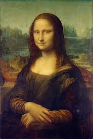
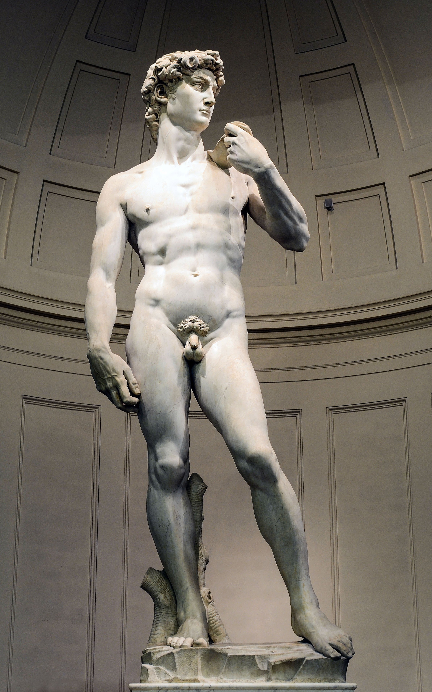
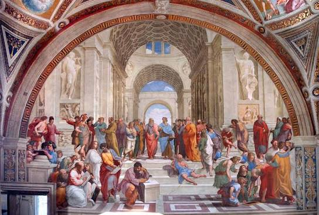
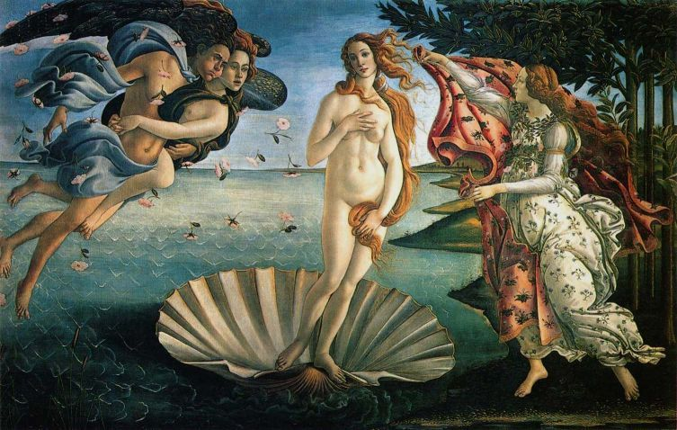

Mona Lisa
Obra-prima de Leonardo da Vinci famosa pelo uso da técnica do sfumato.

Obra-prima de Leonardo da Vinci famosa pelo uso da técnica do sfumato.

Escultura em mármore de Michelangelo que representa a anatomia e força humana.

Afresco de Rafael que reúne grandes filósofos da Antiguidade Clássica.

Pintura de Sandro Botticelli inspirada na mitologia greco-romana.
Tanto a pintura e escultura quanto a poesia resgataram os mitos gregos e romanos. Enquanto Sandro Botticelli retratava mitos em obras como O Nascimento de Vênus, poetas do Classicismo, como Luís de Camões em Os Lusíadas, utilizavam deuses olímpicos para exaltar os feitos e conflitos humanos.
O ser humano torna-se o centro do universo artístico e filosófico. Nas artes plásticas, isso se manifestou pelo estudo preciso da anatomia e expressões faciais. Na literatura, traduziu-se na exploração das emoções, da razão e do amor terreno.
A busca pela proporção áurea e pela perspectiva matemática na pintura encontrou paralelo direto no rigor da poesia clássica. A estrutura perfeita dos sonetos, com métrica regular (versos decassílabos) e rimas planejadas, refletia o mesmo ideal de equilíbrio visual das artes plásticas.